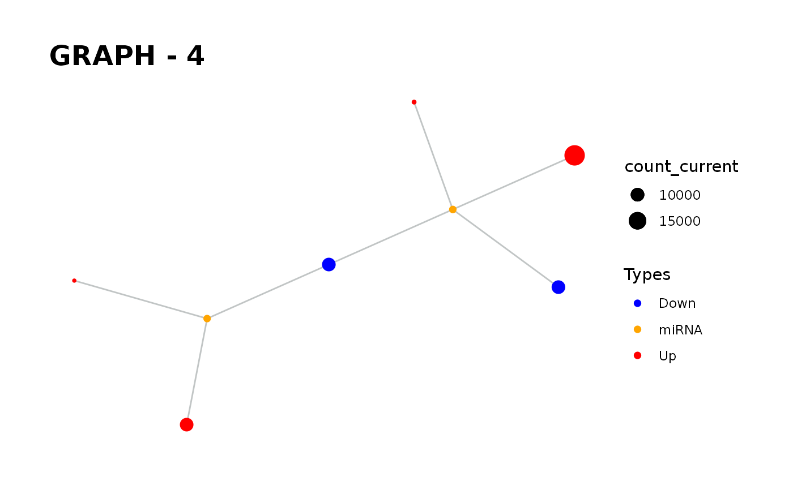

Provides visualisation of the graph in addition to simulate function.
Source:R/simulate_vis.R
simulate_vis.Rdsimulate_vis provides visualisation of the graph in addition to simulate function.
simulate_vis( input_graph, cycle = 1, threshold = 0, save = FALSE, Competing_color = "green", mirna_color = "orange", Upregulation = "red", Downregulation = "blue", title = "GRAPH", layout = "kk" )
Arguments
| input_graph | The graph object that processed in previous steps. |
|---|---|
| cycle | Optimal iteration number for gaining steady-state. |
| threshold | absolute minimum amount of change required to be considered as up/down regulated element |
| save | provides to save graph output |
| Competing_color | The color of competing elements on the graph with "green" default. |
| mirna_color | The color of miRNAs on the graph with "orange" default. |
| Upregulation | The color of Upregulated elements on the graph with "red" default. |
| Downregulation | The color of Downregulated elements on the graph with "blue" default. |
| title | Title of the given graph. |
| layout | The layout that will be used for visualisation of the graph. |
Value
It gives a graph and the images of states in each iteration until the end of the simulation.
Details
simulate_vis gives the last graph object and each iterations' image.
Examples
# When does the system gain steady-state conditions again? ## new_counts, the dataset that includes the current counts of nodes. data("minsamp") data("new_counts") priming_graph(minsamp, Competing_expression, miRNA_expression)%>% update_variables(new_counts)%>% simulate_vis()#> Warning: First column is processed as competing and the second as miRNA.#> # A tbl_graph: 8 nodes and 7 edges #> # #> # A rooted tree #> # #> # Node Data: 8 x 7 (active) #> name type node_id initial_count count_pre count_current changes_variable #> <chr> <chr> <int> <dbl> <dbl> <dbl> <chr> #> 1 Gene1 Competing 1 10000 10000 10063. Up #> 2 Gene2 Competing 2 10000 20000 19841. Down #> 3 Gene3 Competing 3 5000 5000 5032. Up #> 4 Gene4 Competing 4 10000 10000 10063. Up #> 5 Gene5 Competing 5 5000 5000 5000 Competing #> 6 Gene6 Competing 6 10000 10000 10000 Competing #> # … with 2 more rows #> # #> # Edge Data: 7 x 20 #> from to Competing_name miRNA_name Competing_expre… miRNA_expression dummy #> <int> <int> <chr> <chr> <dbl> <dbl> <dbl> #> 1 1 7 Gene1 Mir1 10000 1000 1 #> 2 2 7 Gene2 Mir1 10000 1000 1 #> 3 3 7 Gene3 Mir1 5000 1000 1 #> # … with 4 more rows, and 13 more variables: afff_factor <dbl>, #> # degg_factor <dbl>, comp_count_list <list>, comp_count_pre <dbl>, #> # comp_count_current <dbl>, mirna_count_list <list>, mirna_count_pre <dbl>, #> # mirna_count_current <dbl>, mirna_count_per_dep <dbl>, effect_current <dbl>, #> # effect_pre <dbl>, effect_list <list>, mirna_count_per_comp <dbl>priming_graph(minsamp, Competing_expression, miRNA_expression, aff_factor = c(seed_type,energy), deg_factor = c(region))%>% update_variables(new_counts)%>% simulate_vis(cycle = 12)#> Warning: First column is processed as competing and the second as miRNA.#> # A tbl_graph: 8 nodes and 7 edges #> # #> # A rooted tree #> # #> # Node Data: 8 x 7 (active) #> name type node_id initial_count count_pre count_current changes_variable #> <chr> <chr> <int> <dbl> <dbl> <dbl> <chr> #> 1 Gene1 Competing 1 10000 10064. 10064. Competing #> 2 Gene2 Competing 2 10000 19997. 19997. Competing #> 3 Gene3 Competing 3 5000 5023. 5023. Competing #> 4 Gene4 Competing 4 10000 10029. 10029. Competing #> 5 Gene5 Competing 5 5000 5000. 5000. Competing #> 6 Gene6 Competing 6 10000 10000. 10000. Competing #> # … with 2 more rows #> # #> # Edge Data: 7 x 23 #> from to Competing_name miRNA_name Competing_expre… miRNA_expression #> <int> <int> <chr> <chr> <dbl> <dbl> #> 1 1 7 Gene1 Mir1 10000 1000 #> 2 2 7 Gene2 Mir1 10000 1000 #> 3 3 7 Gene3 Mir1 5000 1000 #> # … with 4 more rows, and 17 more variables: seed_type <dbl>, energy <dbl>, #> # region <dbl>, dummy <dbl>, afff_factor <dbl>, degg_factor <dbl>, #> # comp_count_list <list>, comp_count_pre <dbl>, comp_count_current <dbl>, #> # mirna_count_list <list>, mirna_count_pre <dbl>, mirna_count_current <dbl>, #> # mirna_count_per_dep <dbl>, effect_current <dbl>, effect_pre <dbl>, #> # effect_list <list>, mirna_count_per_comp <dbl>